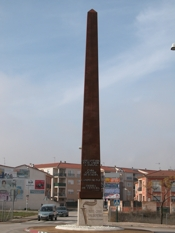

Puerta del Vino, situada en la Avenida Primera de Julio

La Galana situada en la Plaza de San Marcos, en honor a la Valdepeñara "Juana La Galana".

Homenaje al Gañán. Escultura elaboraba el tercer surco en los trabajos de labranza, su autor es: José Lillo Galiani, 2008. Se encuentra en la rotonda Circunvalación Sur

Obelisco. Monolito de de 18 m de altura en acero corten y basamento de piedra.Erigido en el año 2008 con motivo del Bicentenario del 6 de Junio, para dejar constancia de las palabras de reconocimiento a la historia de la ciudad que S.M. el rey Don Juan Carlos I pronunció con motivo de su visita a Valdepeñas en 1990. Se encuentra en la avenida de las Tinajas
